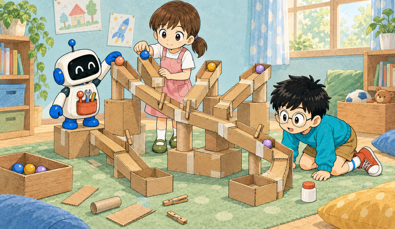

Feature 04 · ARTICLE · 2026 09
The internet discovers TLA+. Now what?
Boris Cherny used Opus 5.5 to model parts of the Claude Agent SDK in TLA+ and Lean, tweeted about it, and people began asking what TLA+ is. TLA+ describes what a system may do and what must always, or eventually, be true of it. It checks a model of the software, not the software itself, and its main model checker only explores finite instances. Proof systems such as Verus go further: specification, proof and Rust implementation can live in the same language. AI can already automate part of this. Our agentic pipeline turned 16,000+ TLA+ specification/property pairs into 3,000+ machine-checked Verus proofs. The interesting question is not only whether an agent can write TLA+. It is what becomes possible once agents can move between specifications, proofs and real programs.

What TLA+ is
TLA+ (Temporal Logic of Actions) writes down two things:
A transition system. States are snapshots of the system: who is a candidate, who has voted for whom, who is leader. Actions are single steps that change a state: “a starts an election”, “b votes for a”.
Temporal properties. These are statements about how a run plays out over time.
Our example has three computers, a, b and c, that must agree on a leader. No two leaders may exist at the same time. From the initial state, any of them may start an election, voting for itself as it does so, and b may vote for a or for c. The model imposes no order on transitions and no probabilities. That is the right abstraction for distributed systems, where messages, timeouts and user actions can happen in many different orders.
The mathematics is simple: sets, true/false statements and relations. Properties are built from operators over executions:
□ P (always P): P holds in every state visited.
◇ P (eventually P): P holds in some future state.
P ⇝ Q (P leads to Q): whenever P holds, Q eventually holds afterwards.
Safety: nothing bad ever happens. For the election, the property is □ (there are never two leaders). The model checker explores all 38 states for three computers and confirms it. Change one rule so that a computer can vote twice, and the checker returns a six-step execution ending with two leaders. That execution is a counterexample.
Liveness: something good eventually happens. Safety alone is not enough, because a system that does nothing forever is perfectly safe. A typo that stops anything from happening still passes the safety check. So we also require ◇ (someone is leader). Liveness needs fairness assumptions, which rule out runs where an action remains possible forever but is never taken. Weak fairness WF(A) says an action that stays enabled must eventually happen. Strong fairness SF(A) covers actions that become enabled infinitely often.
A TLA+ model describes the possible execution traces of a system, and a property says which traces are acceptable. Verification asks whether every possible trace is acceptable. TLC, the standard model checker, answers by enumerating the reachable states of a finite instance. A proof makes the stronger statement that the property holds in general.
What TLA+ is not
TLA+ is in use at AWS, MongoDB, Datadog, in Kafka and elsewhere. On its own, it stops short of full software verification in three ways.
Model checking only goes so far. TLC explores every run, but only of a finite model. Our election grows from 38 states with three computers to more than a million with nine. Arbitrary sizes need a proof. TLA+’s own prover, TLAPS, can do this in some cases, but its automation is limited, particularly for liveness.
The model is not the implementation. Nothing automatically guarantees that the code behaves like the model, and the two can drift apart as the code changes. This is part of the classic spec-to-implementation gap.
TLA+ cannot express every property we may want. It rests on linear temporal logic, which makes statements about individual executions. Other logics reach further:
CTL, a branching-time logic, can say: “from any state, a new election can still be started.”
ATL can say: “this computer has a strategy to become a leader whatever the others do.”
These properties matter once systems contain multiple competing or collaborating agents.
From TLA+ to proofs
One route takes the model into a modern proof system:
Lean is interactive: you, or an AI, write the proof step by step. It is very general, widely used in mathematics, and was the prover in Boris’s post.
Verus is auto-active and designed around Rust. You supply specifications and the important proof structure, and an automated solver handles much of the lower-level reasoning.
Veil is a Lean-based tool for state-machine models. It was recently used to verify a sync engine, fixing 17 bugs in the process. Liveness remains future work, however, and the verified model is still separate from the implementation.
We use Verus because specifications and proofs can live alongside the real Rust implementation. That gives a route toward closing the spec-to-implementation gap: we can ultimately prove that the implementation refines the model. Anvil has already demonstrated this style of verification, and our work builds closely on it.
The proofs are often less exotic than the phrase formal verification suggests:
Safety proofs are usually inductive. Show the property holds initially, then show every action preserves it.
Liveness proofs establish progress. Typically some quantity decreases as the system progresses, and fairness rules out an enabled action being postponed forever. Rules such as WF1, WF2, SF1 and SF2 (Lamport, 1993) package these arguments. Our temporal library implements a subset of them as proven Verus lemmas.
Much of this work is repetitive: tracking invariants, splitting over actions, supplying intermediate lemmas, filling in solver-visible details. That makes it a natural target for proof-generating agents.
From proofs to machine-checked software
Before proving anything about software, we need a useful description of what it is supposed to do. TLA+ suits this. Temporal specifications are compact and readable, and many real systems already have TLA+ models. Connecting those models to proof systems and implementations opens several directions:
Refinement proofs. Prove that the Rust implementation follows the TLA+ model. Anvil did this manually, and automating more of it would shrink the gap.
Program synthesis. Generate an implementation from the model, together with a proof that it refines the model.
Protocol search. Once checking a candidate is cheap enough, the verifier becomes an objective function: generate variants, verify them, keep those with the desired properties. This resembles AlphaEvolve, except that correctness is checked formally rather than estimated by tests.
Beyond linear time. Properties about alternative futures or strategies in multi-agent systems need logics beyond LTL. Benjamin Brast-McKie’s work explores this side. Ours focuses on proving temporal properties and connecting them to programs.
Our progress so far
We have been building a pipeline from TLA+ specifications to machine-checked Verus proofs. The main results for now:
A TLA+ to Verus transpiler. It is algorithmic, and we compared it with an agentic alternative in which one LLM translates and a second reviews.
A prover–reviewer loop with anti-cheat checks. One agent writes a proof and another reviews it. A separate gatekeeper checks that neither has modified the specification or introduced shortcuts such as assume(false).
A dataset of temporal proofs. From 16,459 real-world TLA+ specification/property pairs, the pipeline produced more than 3,000 machine-checked safety and liveness proofs. We also built a 40-task evaluation set.
An evaluation of current models. We tested closed and open-weight frontier models on that set, looking at which temporal proofs they complete and where the remaining failure modes are.
We’ll cover those results in follow-up posts. We’re hiring, and we’d like to hear from teams building systems where correctness really matters.